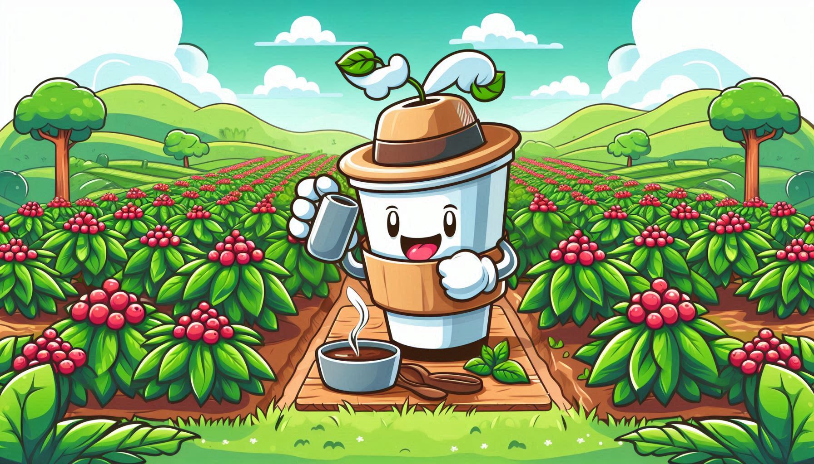
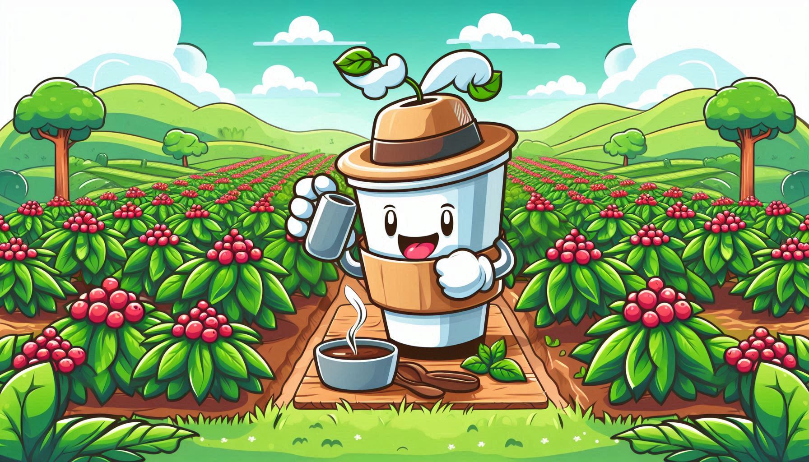
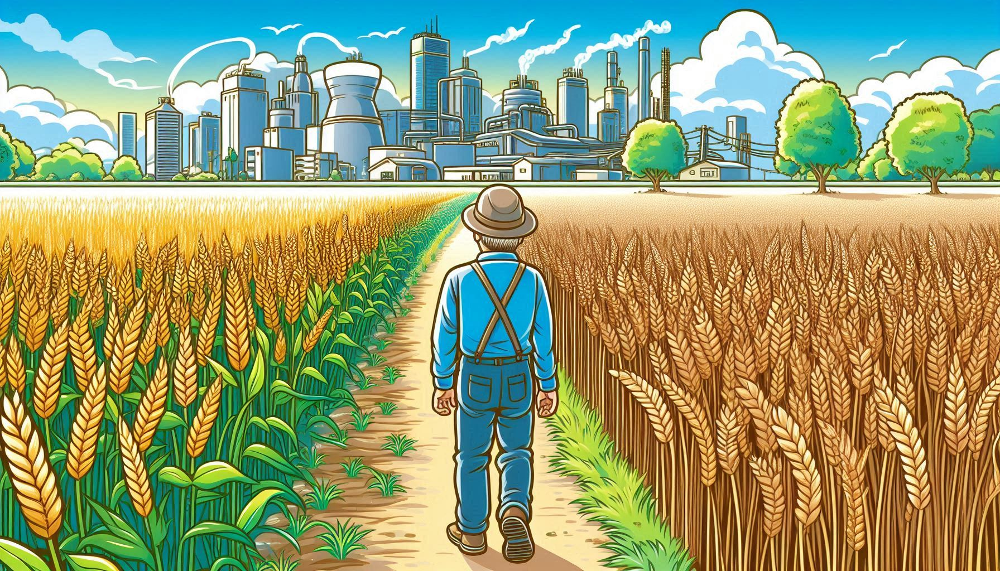
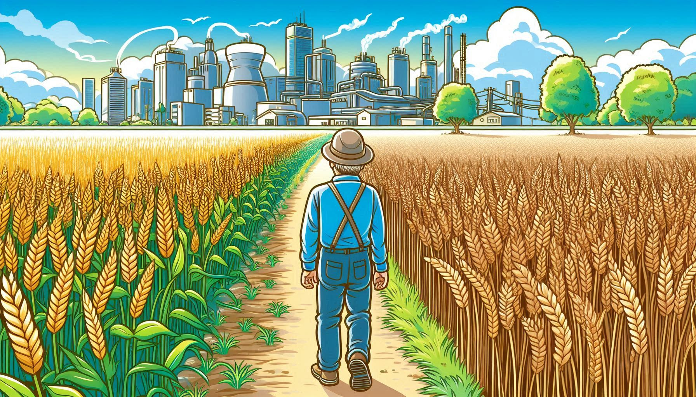

O café foi introduzido no Brasil no início do século XVIII, por volta de 1727, quando as primeiras mudas foram trazidas da Guiana Francesa. O cultivo do café encontrou um ambiente propício no Brasil, e a planta rapidamente se espalhou. Durante o século XIX, o país se tornou o maior produtor mundial de café, status que mantém até hoje. O ciclo do café foi um período importante na história econômica brasileira, sendo uma das principais bases da economia do país durante o Império e parte da República Velha.
O café é uma planta tropical que requer um clima quente e úmido, com temperaturas médias entre 18°C e 25°C e altitudes que variam de 200 a 1.200 metros. No Brasil, os principais estados produtores de café são Minas Gerais, São Paulo, Espírito Santo e Bahia. Minas Gerais é o maior produtor, responsável por cerca de 50% da produção nacional.
A colheita do café geralmente ocorre de maio a setembro, dependendo da região. Existem dois métodos principais de colheita: manual e mecanizada. A colheita manual é mais comum em áreas montanhosas, onde o terreno dificulta o uso de máquinas. Após a colheita, os grãos são separados e passam por processos de secagem, que podem ser feitos ao sol ou em secadores mecânicos.
O café tem uma importância econômica significativa para o Brasil. Além de ser um dos principais produtos de exportação, o cultivo do café gera empregos em diversas regiões do país e contribui para o desenvolvimento de infraestruturas rurais. Além disso, o Brasil é reconhecido mundialmente pela qualidade de seus cafés, que possuem diferentes sabores e características dependendo da região de produção.
 

O cultivo do trigo no Brasil tem uma história mais recente em comparação com o café. Introduzido pelos imigrantes europeus, o trigo encontrou inicialmente dificuldades para se adaptar ao clima brasileiro, mas com o desenvolvimento de técnicas agrícolas e variedades adaptadas, o cultivo se tornou viável. Na década de 1960, o governo brasileiro implementou políticas para incentivar a produção de trigo, buscando reduzir a dependência das importações.
O trigo é uma planta de clima temperado, e sua produção no Brasil é mais concentrada nas regiões Sul e Centro-Oeste, onde o clima é mais ameno. Os principais estados produtores são o Rio Grande do Sul e o Paraná, que juntos representam a maior parte da produção nacional.
A colheita do trigo ocorre geralmente entre os meses de outubro e dezembro. A maioria da colheita é mecanizada, utilizando colheitadeiras que cortam e debulham os grãos. Após a colheita, os grãos são limpos e armazenados em silos para posterior processamento.
Embora o Brasil ainda seja um importador líquido de trigo, a produção interna é crucial para a indústria de panificação e outros produtos derivados. A autossuficiência em trigo é um objetivo estratégico para o país, que busca reduzir sua dependência de mercados internacionais. Além disso, o cultivo de trigo é importante para a rotação de culturas, ajudando a manter a fertilidade do solo e controlar pragas e doenças.
 

A soja foi introduzida no Brasil no início do século XX, mas foi somente nas décadas de 1970 e 1980 que o cultivo realmente se expandiu, impulsionado por pesquisas e desenvolvimento de variedades adaptadas ao clima tropical. A Embrapa (Empresa Brasileira de Pesquisa Agropecuária) desempenhou um papel crucial na expansão da soja no Brasil, desenvolvendo técnicas agrícolas e novas variedades.
A soja é uma planta adaptável a diferentes climas, mas prefere regiões com temperaturas entre 20°C e 30°C e chuvas bem distribuídas. Os principais estados produtores de soja no Brasil são Mato Grosso, Paraná, Rio Grande do Sul, Goiás e Mato Grosso do Sul. O estado de Mato Grosso é o maior produtor, responsável por uma grande parte da produção nacional.
A colheita da soja ocorre geralmente entre os meses de janeiro e abril. A maioria da colheita é mecanizada, utilizando colheitadeiras modernas que fazem a separação dos grãos e da palha. Após a colheita, os grãos de soja são transportados para silos ou armazéns, onde são armazenados até serem processados ou exportados.
A soja é uma das culturas mais importantes do Brasil, tanto para o mercado interno quanto para o externo. O país é um dos maiores produtores e exportadores mundiais de soja, com grandes mercados na China e na Europa. A soja é utilizada na produção de óleo, ração animal e produtos alimentícios, além de ser uma importante fonte de proteína. A produção de soja também desempenha um papel importante na economia de várias regiões, gerando emprego e renda.